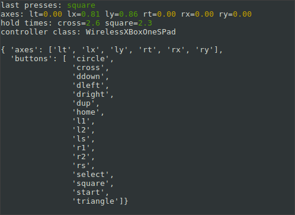

Showing Controller Properties¶
This example will get the first available controller, then show (using the curses library) all the buttons and axes and their values, along with any button presses detected, on the command line. It’s an example of how you might query for what controls are present on a connected controller - for example you might want to do this to check whether the controller supports ever axis you’re going to use later.
1 2 3 4 5 6 7 8 9 10 11 12 13 14 15 16 17 18 19 20 21 22 23 24 25 26 27 28 29 30 31 32 33 34 35 36 37 38 39 40 41 42 43 44 45 46 47 48 49 50 51 52 53 54 55 56 57 58 59 60 61 62 63 64 65 66 67 68 69 70 71 72 73 74 | from approxeng.input.selectbinder import ControllerResource
from time import sleep
import curses
import pprint
def main(screen):
curses.curs_set(False)
curses.init_pair(1, curses.COLOR_RED, curses.COLOR_BLACK)
curses.init_pair(2, curses.COLOR_GREEN, curses.COLOR_BLACK)
curses.init_pair(3, curses.COLOR_YELLOW, curses.COLOR_BLACK)
curses.start_color()
last_presses = None
def red(s):
screen.addstr(s, curses.color_pair(1))
def green(s):
screen.addstr(s, curses.color_pair(2))
def yellow(s):
screen.addstr(s, curses.color_pair(3))
# Loop forever
while True:
try:
with ControllerResource() as joystick:
while joystick.connected:
# Check for presses since the last time we checked
joystick.check_presses()
screen.clear()
if joystick.has_presses:
last_presses = joystick.presses
# Print most recent presses set
screen.addstr(0, 0, 'last presses:')
if last_presses is not None:
for button_name in last_presses:
green(' {}'.format(button_name))
# Print axis values
screen.addstr(1, 0, 'axes:')
for axis_name in joystick.axes.names:
screen.addstr(' {}='.format(axis_name))
axis_value = joystick[axis_name]
if axis_value > 0:
green('{:.2f}'.format(axis_value))
elif axis_value < 0:
red('{:.2f}'.format(axis_value))
else:
yellow('{:.2f}'.format(axis_value))
# Print button hold times
screen.addstr(2, 0, 'hold times:')
for button_name in joystick.buttons.names:
hold_time = joystick[button_name]
if hold_time is not None:
screen.addstr(' {}='.format(button_name))
green('{:.1f}'.format(hold_time))
# Print some details of the controller
screen.addstr(3, 0, 'controller class: {}'.format(type(joystick).__name__))
screen.addstr(5, 0, pprint.pformat(joystick.controls, indent=2))
screen.refresh()
except IOError:
screen.clear()
screen.addstr(0, 0, 'Waiting for controller')
screen.refresh()
sleep(1.0)
curses.wrapper(main)
|